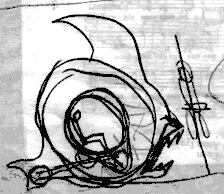

| Photos by John Mulliken. |
In 1893, two intrepid young American gentlemen, Dr. Burnout and Wilhelm "Papa" Wheelie, were exploring the deserts of Asia when they discovered an amazing mystery cult deep in the heart of Mongolia. The high priests of this cult possessed objects of a technology centuries more advanced than anything known to western civilization.
Wheelie and Burnout were unable to comprehend at that time that these objects were the detrius of an ancient alien spacecraft that had crash-landed in the area millennia ago. As the eerie radiations emitted by these implements produced a disoriented state in the explorers, they theorized that the devices had been constructed by the locals according to the instructions of highly self-actualized citizens of the future, who used the spirits of the dead to relay their messages into the past. Their journals tell of a midnight visitation by one such citizen known as "Chunkulus Prime", who urged them to "bring my teachings to your home and preach them to the world" so that "the planet may achieve Level Three".

The two gentlemen brought back schematics of some of these artifacts back to America, and founded the The Brotherhood of the Eternally Rotating Wheel. This was a somewhat whacked spiritualist organization and temperance league which sought enlightenment through the stimulation delivered by devices constructed by Burnout and Wheelie based on what they had seen in Asia. Unfortunately, errors in their notes caused these devices to produce the opposite effect than that intended by the explorers; rather than becoming enlightened, cultured beings, the brothers of the Brotherhood found themselves growing crude and unmannerly.
| Photo by John Mulliken. |
It was at this point that Roy D. joined the Brotherhood. At first, he just wanted to ride the bikes, which only the Brethren were allowed to access. Soon, however, he found that the wide-band chunkulation field caused him to become strong, aggressive, and ambitious. He quickly dominated the organization. Sweeping changes were instituted. The punch was spiked. Rather than riding in placid circles in their "Rink of the Meditations", the Brethren took to the streets. With D. goading them into a frenzy, they found themselves booted out of town, and took to wandering the countryside, always just one step ahead of the law.
Meanwhile, traditional bicycle technology continued to progress. With the invention of the the "safety bicycle", bicycling became an important factor in womens' liberation, rather than a sport for gentlemen alone. These advances came far too slowly for two uppity young women, known today only as "Chunk Lady" and "Trike Lady". They felt nothing but content for the "bloomer-wearing wimps and their silly hats" who filled the streets of the day. Constructing their own choppers, they tracked down the wandering Brotherhood and announced their intention to join. The Brethren resisted - they didn't want to lose the cigar-chomping "old boy" feel of the gang - but the ladies were more powerful. After they demonstrated their skills by riding the Brethren into the ground and cracking a few skulls, they were welcomed into the flock. Tired of their wanderings, they established the Secret Hideout, and began raiding the countryside for supplies and recruits. C.H.U.N.K. 666 as we know it today was formed.
The machines of Wheelie and Burnout had strange life-extending effects on Chunk Lady and Trike Lady. Despite several spectacular crashes that often severed limbs and even heads from their bodies, they have outlasted the usual short lifespan of the Chunker many times over, and survive to this day.
Chunk Lady is extremely reclusive, and only leaves her fortress to get supplies under the cover of heavy rain or snow. She is both wily and quick, and we have been unable to approach her closely.
Trike Lady is more sociable, taking leisurely rides throughout the neighborhood. She will sometimes allow a lone Chunker to coast alongside her for a few blocks and receive valuable advice. We've asked her to come on rides with us, but she refuses each time, grumbling about how kids these days are "wimps" and reminding us about the time that she hauled five refreshment modules up the hill and drank three of them on the way.
| Copyright 2003 Megulon Five <megulon5@dclxvi.org>. |
|
This work is licensed under a Creative Commons License. | Last modified 12 September 1997. |